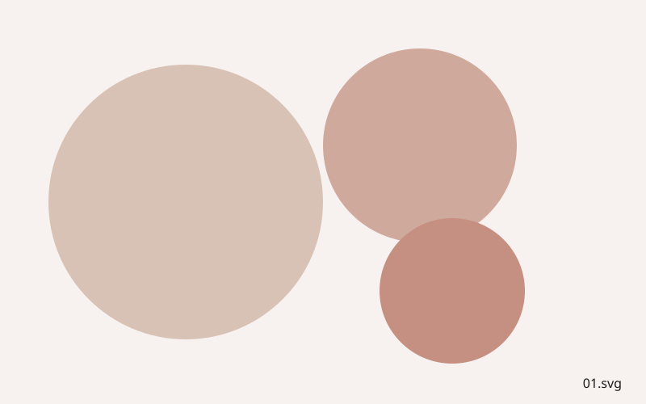
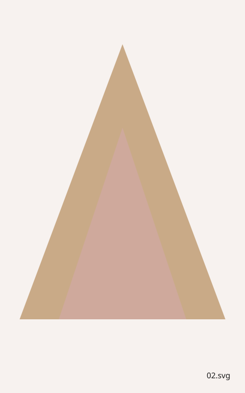
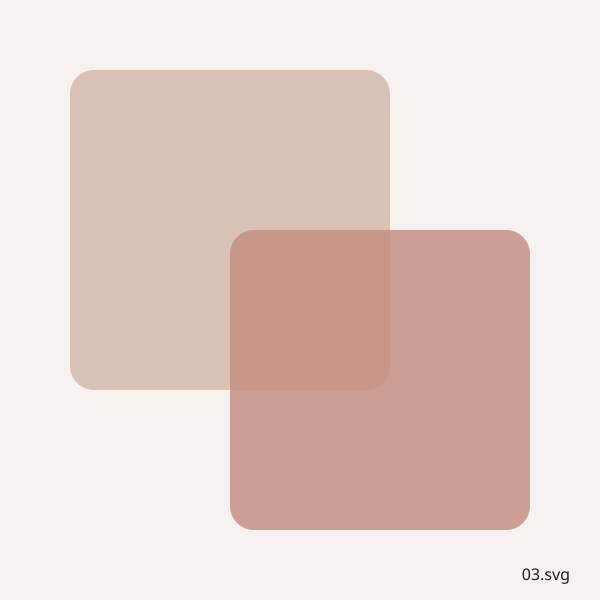
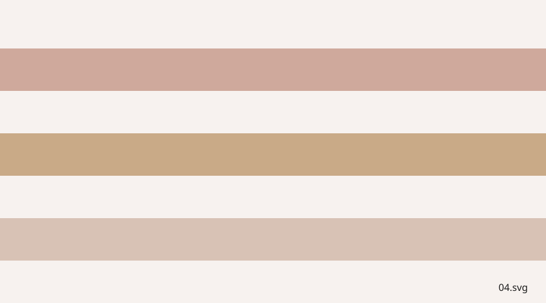
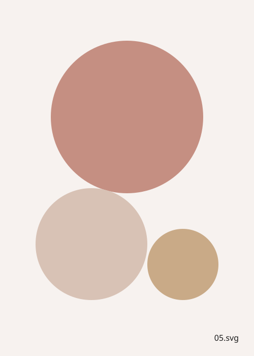
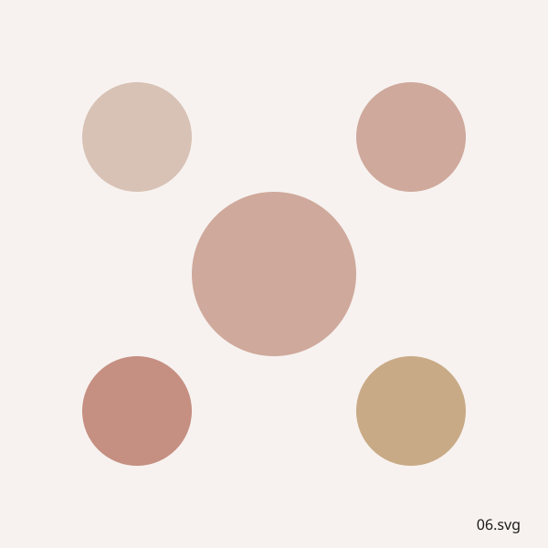

Paintings
Oil and acrylic paintings made in the studio, most of them drawn from the hills, olive groves and stone towns around Assisi. Each piece below is shown with its title, materials and year.

Hillside Light
Oil on canvas, 2024. Morning light over the olive terraces.

Bell Tower
Acrylic on board, 2023. A study of the village campanile at dusk.

Two Fields
Oil on canvas, 2022. Farmland divided by an old stone wall.

Terraces
Acrylic on canvas, 2024. Layers of cultivated hillside.

Vineyard Rest
Oil on canvas, 2021. A quiet corner of the family vineyard.

Piazza
Acrylic on board, 2023. The village square on a market morning.